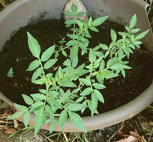

This tuberous plant is not precisely a Potato, but a species very closely related to potatoes.These tubers have been used as a food source by native tribes in the American Southwest for at least 10,000 years, and probably became a cultivated crop very early, but an exact date has yet to be established. They are still used today as a food crop by tribes living in the Four Corners region of the United States, and surrounding areas. They are very small, only up to about 1-1/4 inches, but the plants are prolific. The tubers are also very bitter, so need special cooking. Archaeologists have found they were also dried and ground into flour in ancient times.
These plants grow leaves on very thin stems, so have a somewhat recumbent growth pattern. Different tubers may grow with very different degrees of enthusiasm. Some will grow very fast and be flowering in just a couple of weeks, others may grow much more slowly, and some will be reluctant to sprout for some time.
More on Potatoes.
The photo to the left is of Potatoes from the photo batch at 3-1/2 weeks from planting. Note that some are much smaller. At 4 weeks, the largest ones were already setting flowers.
